童话里，灰姑娘遇到王子，从此便过上了幸福生活。
而现实呢？嫁入皇室的平民奇女子们，结局往往是一声叹息。
前有英国戴安娜王妃，后有摩洛哥“人间富贵花”萨尔玛。
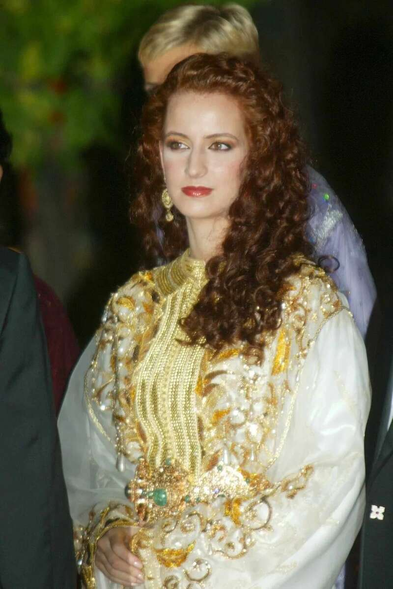
她曾被列入“全球最美王妃”榜单，集智慧与美貌于一身。
国王为了迎娶她，不惜打破王室传统，终结“三宫六院”，唯爱她一人。
如此惊世骇俗的爱恋，却在结婚16年后，以王妃萨尔玛的“消失”落下帷幕。
直到最近，有媒体拍到萨尔玛的“高糊”视频，大众才惊觉：
最美王妃，消失整整7年了。
有网友说，萨尔玛的美，让《一千零一夜》里的王后真正具象化。
蓬松的红发，深邃的星眸，明艳的笑容——萨尔玛几乎每一次的公开亮相，都会成为媒体关注的焦点。
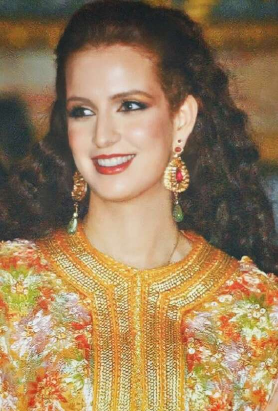
连“阅妃无数”泰国国王玛哈，外交接见时，也一整个呆住，秒变“痴汉”。
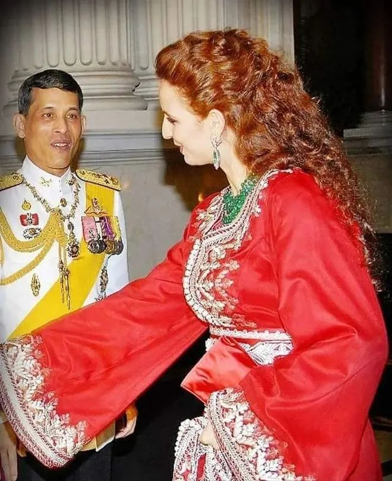
然而，萨尔玛的人生，远不止“惊天美貌”四个字。
当她以王妃身份公开出现在世人面前时，已经改写了历史。
1978年5月，萨尔玛·贝娜妮（Salma Bennani）出生在摩洛哥知名古城菲斯，父亲是一名教师，母亲在她3岁时因病离开了人世。
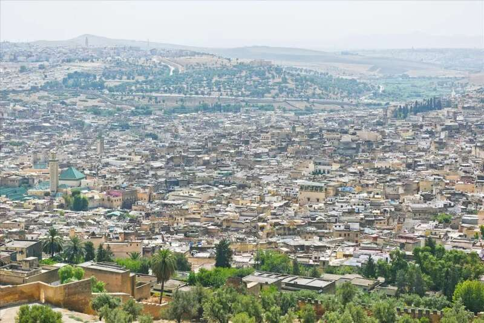
●摩洛哥菲斯古城。图片来源：摄图网
年幼无依之际，是外祖母担起了家庭重担——外祖母将萨尔玛和她的姐姐接到首都拉巴特，细心抚养她们长大，并让她们都接受良好的教育。
就这样，备受呵护的萨尔玛渐渐出落成了“别人家的孩子”：人美心善、成绩优异，自信独立。
1997年，19岁的她一举考入摩洛哥知名学府攻读计算机工程，成为班里屈指可数的女学生。
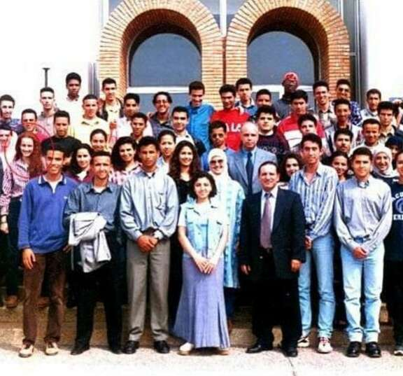
●二排左一为萨尔玛
此外她还精通阿拉伯语、法语、西班牙语和英语。
念书期间，萨尔玛的美貌吸引来了无数的追求者，但上进如她，并未将爱情预设为必修课。
大学毕业后，萨尔玛如愿加入摩洛哥最大的私营企业“北非投资集团”——担任信息系统工程师。
她与同事合作研发出了一套自动化信息管理系统，帮助公司提质增效，切实地降低了运营成本。
如果不是那场偶然的宴会，萨尔玛也许会成为一名职场精英，在计算机领域开疆拓土。
但冥冥中的缘分，让36岁的穆罕默德，遇见了21岁的萨尔玛。
1999年初，在一场名流云集的私人宴会上，觥筹交错，佳人如云。
迷人又自信的萨尔玛毫无预警地闯进了穆罕默德的心里。
一见钟情的沉沦，就此一发不可收拾。
彼时的穆罕默德是摩洛哥的王储，尚未登基，算得顶级黄金单身汉。
作为摩洛哥国王哈桑二世的长子，穆罕默德自出生起，便备受重视，各种教育都奔着储君的方向精雕细琢。
他从小接受贵族教育，思想开明，兴趣广泛——赛艇、骑马、高尔夫都玩得有模有样，还会开飞机。
●穆罕默德（左一）
在遇见萨尔玛前，他也是有名的“花花公子”：不止一次地被媒体拍到进出夜店，身边的女伴也频繁更换。
若任由这个节奏发展下去，他很可能会走上泰国国王玛哈的老路，整一出摩洛哥版的“甄嬛传”。
毕竟在摩洛哥不仅王室，连平民都允许“一夫多妻”，女性地位较低。
摩洛哥历代国王都享有“三宫六院”，穆罕默德的父亲哈桑二世就有两个妻子，以及30多位嫔妃。
但那场宴会之后，唯有萨尔玛的倩影在穆罕默德心中挥之不去。
他开始主动靠近萨尔玛，不顾15岁的年龄差，对心爱之人展开猛烈追求。
一个是见多识广、手握重权的王室储君，一个是美貌如花、智慧独立的高知学霸——谈笑间，擦碰出的火花不再局限于好看的皮囊，两人更欣赏彼此独立有趣的灵魂。
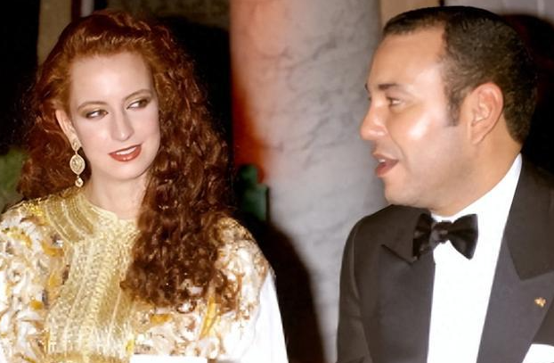
几番接触下来，萨尔玛同意了穆罕默德的追求，两人谈起了甜甜的恋爱。
然而，在爱情吹起的龙卷风还未平息之时，摩洛哥王室传来了噩耗：
穆罕默德的父亲哈桑二世病逝了。
按照摩洛哥的惯例，王储登基前要先成家。
于是，在一次约会中，穆罕默德诚挚地向萨尔玛求婚：嫁给我，你将成为摩洛哥未来的王妃。
原以为萨尔玛会像童话里一样欣然应许，流下感动的泪水，没想到，穆罕默德却等来了女友的婉拒。
萨尔玛并不愿意成为王室“三宫六院”中的一员，她理性地告诉王储男友：
我只接受一夫一妻的婚姻，不想为爱陷入深宫，失去独立与自由。
这样的要求，在当时的摩洛哥王室，简直犹如“天方夜谭”。
摩洛哥王室长期以来作风保守，不仅推行“一夫多妻”制，而且从不对外公布王室女性信息，即使诞下子嗣，她们也没有名分，仅仅被媒体称为“某某王子（公主）的母亲”。
女性在王室，几乎是隐身的，从不抛头露面，更无谈外出工作。
爱情诚可贵，自由价更高。热恋中的萨尔玛，并未被王室光环冲昏头脑，始终保持着独一份的清醒。
眼看这段感情要无疾而终时，穆罕默德却为爱做出了举国震惊的努力。
1999年7月30日，穆罕默德登基成为摩洛哥阿拉维王朝第22位君主，被尊称为默罕默德六世。
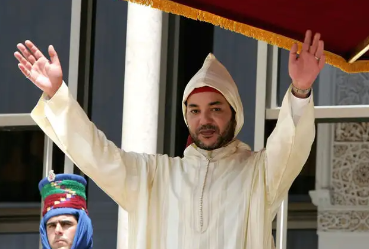
●穆罕默德六世
新国王上任后，推行了一系列制度变革，其中最瞩目的一项修宪内容是：
全国推行一夫一妻制，男子不得随意休妻，离婚后丈夫需承担孩子的抚养费。
不仅如此，他还遣散了父亲的后宫，将所有嫔妃送出皇宫，以示终结“三宫六院”的决心。
这一举动彻底打动了萨尔玛，女神欣然点头，穆罕默德如愿抱得美人归。
连国外媒体在听闻此事后，都连连夸赞，称他为“The Cool King”。
为了让萨尔玛感受到自己的诚意，穆罕默德还向国民公开分享了自己将迎娶平民王妃的喜讯，并在摩洛哥各大报刊头条刊登萨尔玛的美照与人物介绍。
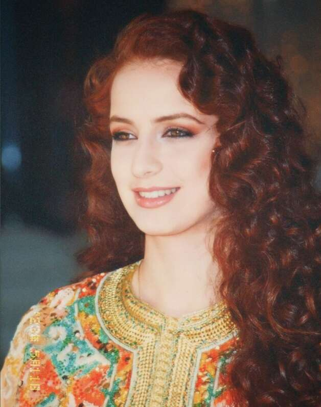
这一操作，对于摩洛哥而言，绝对属于炸裂级别的。
在此前的几百年间，摩洛哥阿拉维王朝的婚庆事宜，从不会向外宣布，老百姓在报纸上见到未来王妃照片，还是生平头一遭。
2002年7月12日晚，拉巴特王宫外的小广场人山人海，在摩洛哥百姓和众多外宾的共同见证下，穆罕默德六世与萨尔玛举行了隆重的结婚庆典。
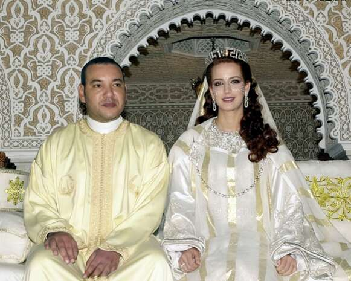
●2002年，穆罕默德六世与萨尔玛举行婚礼
婚礼持续了三天，穆罕默德还在全国征集了300对新人，与他和萨尔玛一起，举行集体结婚仪式。
这场震惊国内外的婚礼创下了多个历史记录：摩洛哥王室举办的第一场集体婚礼；王室第一场电视直播的婚礼；王室第一场邀请外宾参加的婚礼……
在婚礼现场，爱妻心切的穆罕默德还册封萨尔玛为“拉拉·萨尔玛公主”，“拉拉（Lalla）”是对摩洛哥贵族女性的敬称，意味着从此以后萨尔玛与国王的姐妹享有同等王室待遇。
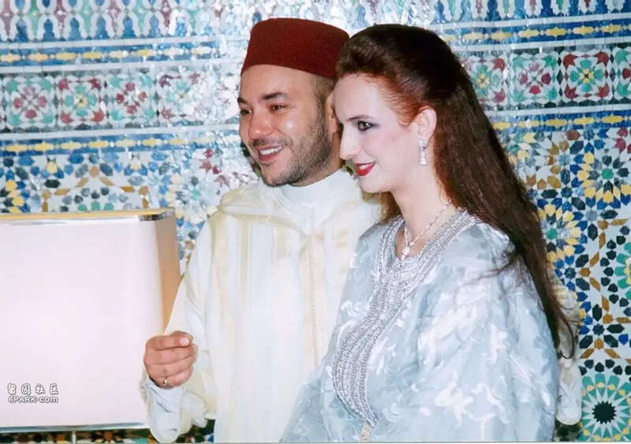
因为爱情，平民美女萨尔玛·贝娜妮华丽转身，成为拉拉·萨尔玛，万众瞩目。
婚后的两人感情很好，萨尔玛于2003年生下哈桑王子，又于2007年迎来女儿哈迪贾公主。
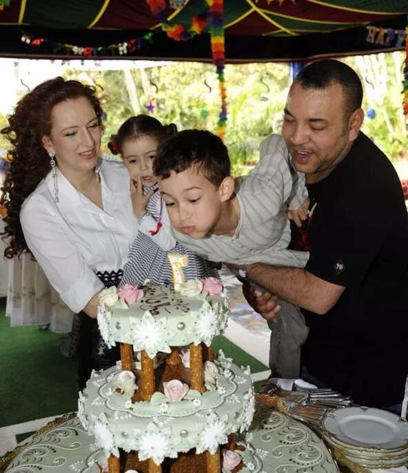
●萨尔玛一家四口
一家四口其乐融融，时不时在网络分享甜蜜合照。
成为王妃之后的萨尔玛，不仅没有从公众视野淡去，反而闪现出了更多耀眼光芒。
在无数摩洛哥人心里，萨尔玛无疑是现代女性的新榜样。
作为摩洛哥首位参与社会活动的王室女性，她总是落落大方地随夫出访，一改穆斯林国家女性裹头巾、慎言谈的刻板印象。
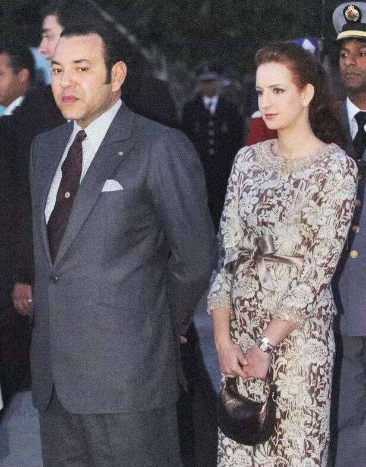
那头飘逸的红发，搭配阿拉伯风改良长袍，举手投足间，都展现出一股优雅从容的别致格调。
这份自信与端庄，让萨尔玛成为摩洛哥最美代言人，吸粉无数。
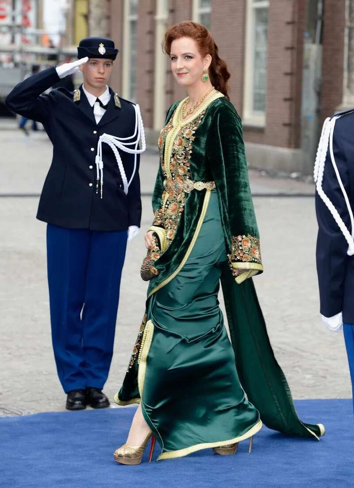
老百姓真正佩服的，还不是萨尔玛的绝世美颜或者时尚穿搭，而是她为提升摩洛哥女性地位，保障弱势群体权益而做出的努力。
2005年，她创立了“拉拉·萨尔玛基金会”，用于预防和治疗癌症。
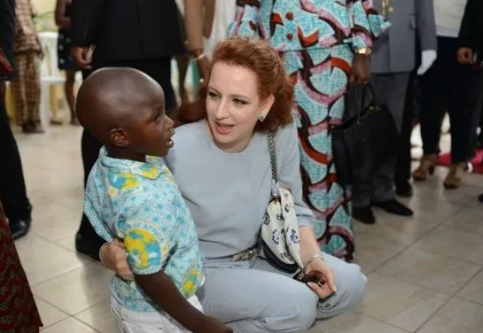
2006年，她被任命为世界卫生组织癌症护理促进和预防的亲善大使，进一步推进慈善事业。
在丈夫穆罕默德的支持下，摩洛哥颁布了新的《家庭地位法》，将女性最低结婚年龄从14岁上调到18岁。
因着萨尔玛身体力行的努力与奔走，这位第一夫人得到了越来愈多的认可。人们爱她的超凡脱俗，爱她的敢想敢为，更羡慕她与穆罕默德的相互扶持——直呼是爱情童话照进了现实。
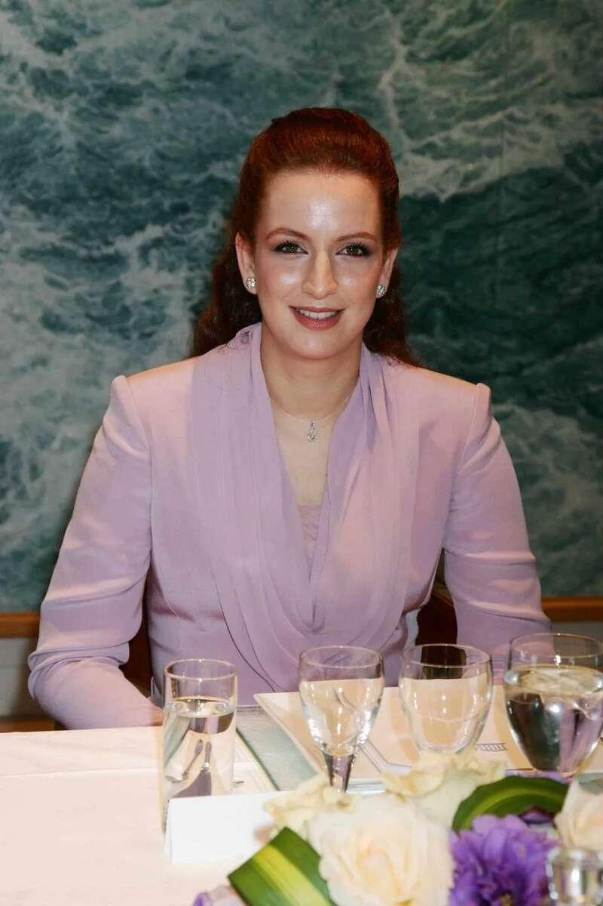
●2007年，萨尔玛出席联合国教科文组织大会
然而，后来的故事，与童话背道而驰。
2017年11月，萨尔玛在公开出席了一场博物馆活动之后，突然“消失”了。
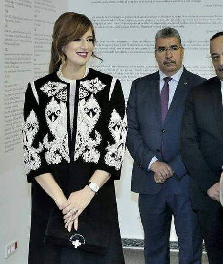
●萨尔玛最后一次公开出席活动
2018年，国王穆罕默德在做完心脏手术之后，分享了一张官方照片——照片里陪伴在国王左右的是他的兄弟、三个姐妹以及一双儿女，唯独没有萨尔玛。
舆论开始不断发酵：王妃究竟去了哪里呢？
坊间开始流传各种传闻：王妃被国王的姐妹联手逼出了王宫；王妃误伤到了国王穆罕默德；王妃抛头露面的作风惹恼了王室女性……即使是在流言漫天的时候，摩洛哥王室也三缄其口，保持沉默。
直到2019年，摩洛哥王室才授意媒体，含蓄地承认了穆罕默德与萨尔玛离婚的事实。
据有关媒体透露，两人在2018年正式结束了婚姻关系，萨尔玛依然保留了“拉拉”头衔。
●2019年9月，有人看到萨尔玛带着两个孩子出现在纽约中央公园附近
16年的爱侣，何故转而陌路？
曾经为了她修改宪法，许她一生一世的王子，为何松开了牵着的手？
也许是漫长的时间打破了童话梦幻，色衰爱弛；又或者天长地久有时尽，情缘难续。
一切的一切，终究再也回不到过去，那个初相识的晚上。
现今，萨尔玛的一对儿女已经从天真孩童蜕变为俊男靓女——21岁的哈桑王子俊朗腼腆，从容参与各类王室活动，处事稳重。
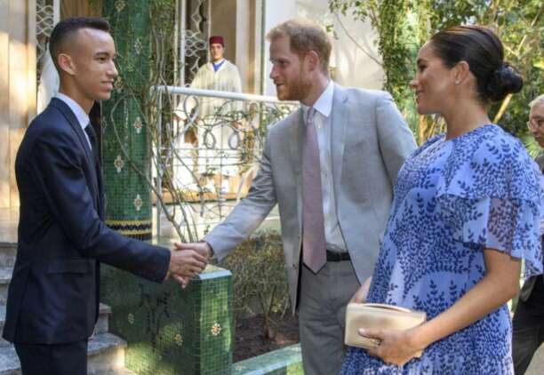
●哈桑王子接见哈里夫妇
而17岁的哈迪贾公主则继承了母亲的美貌基因，出落得亭亭玉立。
●哈迪贾公主与父亲穆罕默德
近日，有网友偶然拍到萨尔玛与儿女现身希腊米克诺斯岛，一行人在岛上惬意散步，周围跟着不少保镖。

●据外媒爆料，萨尔玛与儿子女儿在一起
昔日“摩洛哥最耀眼的珍珠”，成了如今模糊无解的谜团。
有人遗憾朱颜辞镜，有人猜测“王妃”难当。
但无论如何，萨尔玛已然成为了摩洛哥一张富有传奇色彩的名片。
风华绝代是她，破旧革新是她，爱而不痴还是她。
纵使灰姑娘的爱情未能在现实白头偕老，萨尔玛却用一次次的突破传统刷新了阿拉伯女性形象。
“消失”的她，期待有一天还能飒爽地重现江湖。